Introduction
This project investigates whether we can predict if a recipe review will receive a five-star rating using review text and recipe-related features. Readers should care about this question because understanding what drives five-star ratings can help recipe creators write better recipes and help recipe platforms identify which content to promote more often.
Our central question is: How accurately can we predict whether a recipe review submitted by a user will be five stars based on the review text and recipe characteristics?
Dataset
Our project uses two datasets: a recipes dataset and an interactions dataset from Foods.com, which contains user reviews and ratings data from 2008 to 2018. These datasets were merged together using a left join on the recipe identifier.
Relevant Columns
| Column | Description |
|---|---|
| review | Text written by the user about the recipe |
| rating | User rating assigned to the recipe |
| minutes | Total time required to make the recipe |
| tags | Recipe tags used for categorization |
| ingredients | List of ingredients used in the recipe |
| n_ingredients | Number of ingredients in the recipe |
| submitted | Date the recipe was submitted |
| avg_rating | Average rating across users |
Data Cleaning
1. Merging the datasets
We merged the recipes and interactions datasets using a left join to retain all recipes, even those without review activity.
merged = recipes.merge(
interactions,
how="left",
left_on="id",
right_on="recipe_id"
)2. Replacing 0 ratings with missing values
All records where the value in the rating column was 0 were treated as missing and replaced with NaN so that missingness could be studied appropriately.
merged["rating"] = merged["rating"].replace(0, np.nan)3. Create Average Rating and merged it into the dataset
The average rating column was created , grouped by the rating column and populated as the average rating. This was merged itno the main dataset as a column titled "average rating".
average_rating = merged.groupby("id")["rating"].mean().rename("average_rating")
merged = merged.merge(average_rating, on='id', how='left')
4. Expanding the nutrition column
The nutrition column was converted from a list-like string with seven values for each record into separate usable numeric columns such as
calories, total_fat, sugar, sodium, protein, saturated_fat, and carbs.
This was done so that nutrition categories could be used for exploratory data analysis and model building.
nutr_cols = ["calories", "total_fat", "sugar", "sodium", "protein", "saturated_fat", "carbs"]
merged["nutrition"] = merged["nutrition"].apply(
lambda s: ast.literal_eval(s) if isinstance(s, str) else s
)
def ensure7(x):
return x if isinstance(x, list) and len(x) == 7 else [np.nan] * 7
merged[nutr_cols] = pd.DataFrame(
merged["nutrition"].apply(ensure7).tolist(),
columns=nutr_cols,
index=merged.index
)
merged = merged.drop(columns=["nutrition"], errors="ignore")After running the scripts, the dataset looks like this:
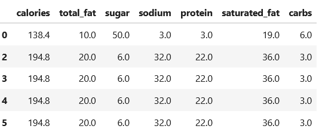
5. Creating date-based features
We converted the submitted column into datetime format to accomdate potential usage in EDA.
import datetime as dt
merged["submitted"] = pd.to_datetime(merged["submitted"])6. Creating Review Length
The column review length was created to define how many characters were utilized by a user to sumbmit a review, has potential usage in EDA and machine learning
merged['review_length'] = merged['review'].str.len()
7. Converting the tags column
The tags column originally stored list-like values as strings.
We converted these string representations into actual Python lists so that the tags could be analyzed
and later used in feature engineering for classification models.
merged["tags"] = merged["tags"].apply(
lambda x: ast.literal_eval(x) if isinstance(x, str) else x
)8. Converting the ingredients column
Similarly, the ingredients column contained list-like values stored as strings.
We converted these values into Python lists to enable more flexible analysis and modeling using ingredient-level information.
merged["ingredients"] = merged["ingredients"].apply(
lambda x: ast.literal_eval(x) if isinstance(x, str) else x
)9. Creating a meal_type feature
We created a function to classify each recipe into a general meal category based on its tags.
This produced a new meal_type column with values such as dessert, breakfast,
lunch, dinner, snack, or other.
This feature was useful for exploratory data analysis and subgroup comparisons.
def get_meal_type(tags):
if not isinstance(tags, list):
return "other"
tags_lower = [t.lower() for t in tags]
if any("dessert" in t for t in tags_lower):
return "dessert"
if any("breakfast" in t for t in tags_lower):
return "breakfast"
if any("lunch" in t for t in tags_lower):
return "lunch"
if any("dinner" in t for t in tags_lower):
return "dinner"
if any("snack" in t for t in tags_lower):
return "snack"
return "other"
merged["meal_type"] = merged["tags"].apply(get_meal_type)
merged["meal_type"].value_counts()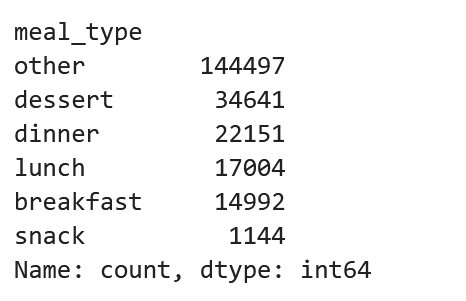
10. Creating time-threshold indicators
We engineered Boolean indicator variables for recipes that can be prepared within 60, 30, and 15 minutes. These features allow us to compare shorter recipes with longer ones during both exploratory analysis and modeling.
merged["60 Minutes or Less"] = np.where(merged["minutes"] <= 60, True, False).astype(bool)
merged["30 Minutes or Less"] = np.where(merged["minutes"] <= 30, True, False).astype(bool)
merged["15 Minutes or Less"] = np.where(merged["minutes"] <= 15, True, False).astype(bool)Exploratory Data Analysis
Distribution Shapes
Histograms showed that hours, and review length are right-skewed. This suggests that transformations may be useful in downstream machine learning pipelines to account for the skews in these numeric variables.
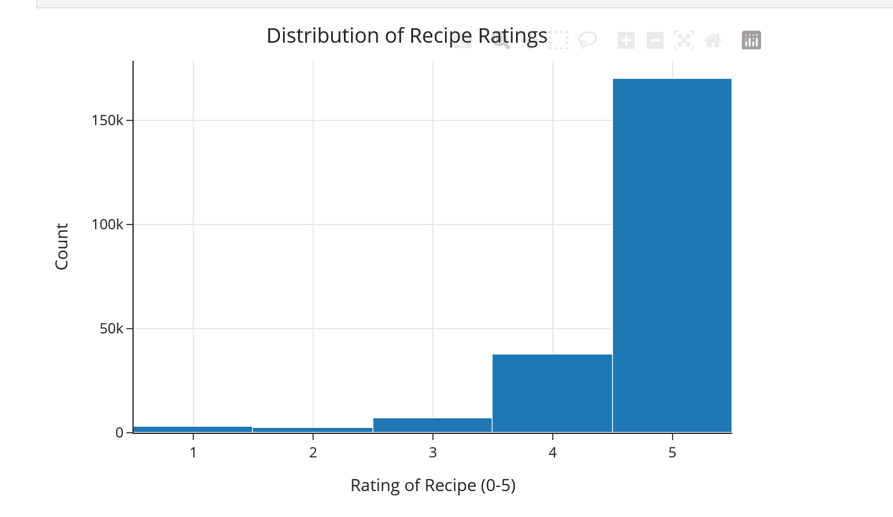
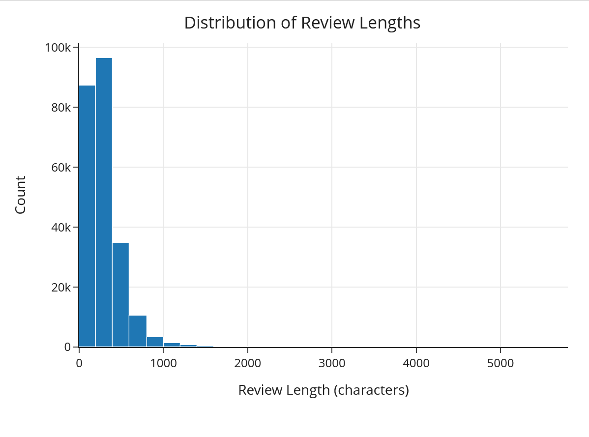
Review Length by Rating
There is a trend that reviews of five stars tend to have more characters. Shorter reviews generally have less characters and longer reviews have more characters.
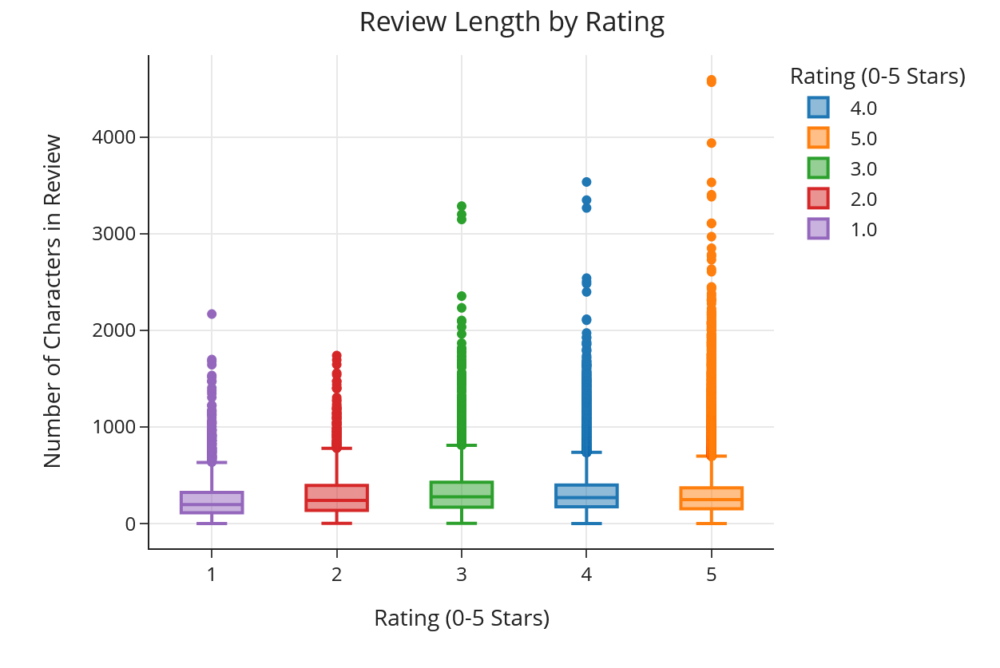
Scatterplot of Cooking Time and Rating
Here is the relationship between cooking time (minutes) and the rating (0-5) stars

Meal Type Counts
Dessert was the most common meal type represented in the dataset after excluding recipes labeled as "other".
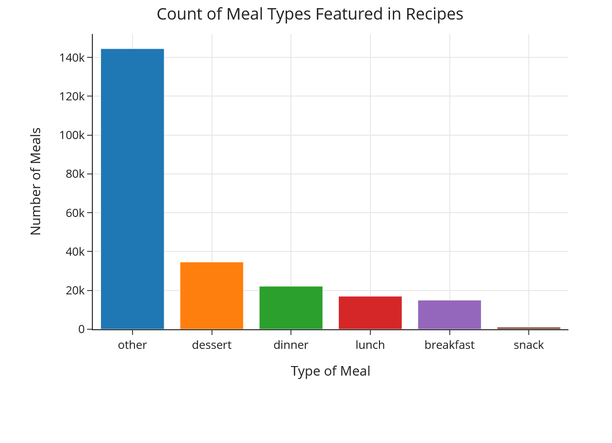
Ingredient Groups
Listed here is the average rating, cooking time in minutes, number of steps and review length of recipes by the respective bins of total amount of ingreidents.
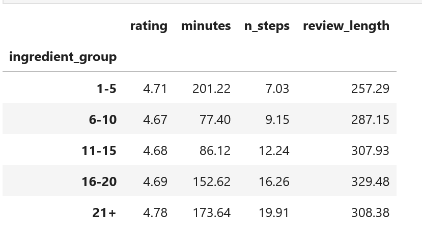
Cooking Time by Meal Type
Box plots indicated that desserts and dinners generally take the longest to prepare, while lunch and snack recipes take the least time.
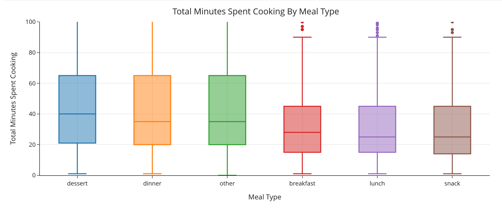
Average Rating by Meal Type
The following code computes the mean ratings by meal type. Mean ratings were high across all meal types, generally at or above 4.6, suggesting that the dataset is skewed toward favorable reviews.
food_group_ratings = (
merged.pivot_table(
index="meal_type",
values="rating",
aggfunc="mean"
)
.rename(columns={"rating": "Average Rating"})
.sort_values(by="Average Rating", ascending=False)
)
food_group_ratings
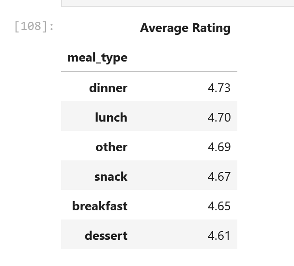
Average Rating by Number of Steps
The following code computes the average number of steps by meal type. The dinner and desset meal type have the highest average number of meal types taken.
food_group_ratings = (
food_group_steps = merged.pivot_table(
index="meal_type",
values="n_steps",
aggfunc="mean"
)
food_group_steps.sort_values(by="n_steps", ascending=True, inplace=True)
food_group_steps = food_group_steps.rename(columns={"n_steps": "Average Number of Steps Taken"}).round(1)
food_group_steps
)Assessment of Missingness
Rating Missingness
We investigated whether the missingness in the description column is related to the number of ingreidents and number of steps columns. If the missingness depends on the observed variables, then the missingness mechanism would be consistent with Missing At Random (MAR) rather than Missing Completely At Random (MCAR).
Permutation Test 1
We tested whether descrpition missingness was associated with Number of Steps.
Null Hypothesis: The missingness in the description column is independent of the number of steps.
Alternative Hypothesis: The missingness in the description column depends on the number of steps.
merged['desc_missing'] = merged['description'].isna()
print(f'missing descriptions: {merged["desc_missing"].sum()}')
test_df1 = merged[["desc_missing", "n_steps"]].dropna()
observed_stat = (
test_df1.groupby("desc_missing")["n_steps"]
.mean()
.diff()
.iloc[-1]
)
print(f"Observed difference: {observed_stat:.4f}")
n_reps = 1000
shuffled_stats = []
for _ in range(n_reps):
shuffled = np.random.permutation(test_df1["desc_missing"])
diff = (
test_df1.assign(desc_missing=shuffled)
.groupby("desc_missing")["n_steps"]
.mean()
.diff()
.iloc[-1]
)
shuffled_stats.append(diff)
p_value = np.mean(np.abs(shuffled_stats) >= np.abs(observed_stat))
print(f"p-value: {p_value:.3f}")
The observed difference in the mean number of steps between recipes with missing and non-missing descriptions was 0.7194.
The permutation test produced a p-value of approximately 0.229, which is above the significance level of 0.05.
Therefore, we fail to reject the null hypothesis that description missingness is independent of the number of steps.
This suggests that there is no strong evidence that missingness in the description column depends on the number of steps.
However, this alone is not sufficient to conclude that the data are Missing Completely At Random (MCAR), since missingness may still depend on other variables.
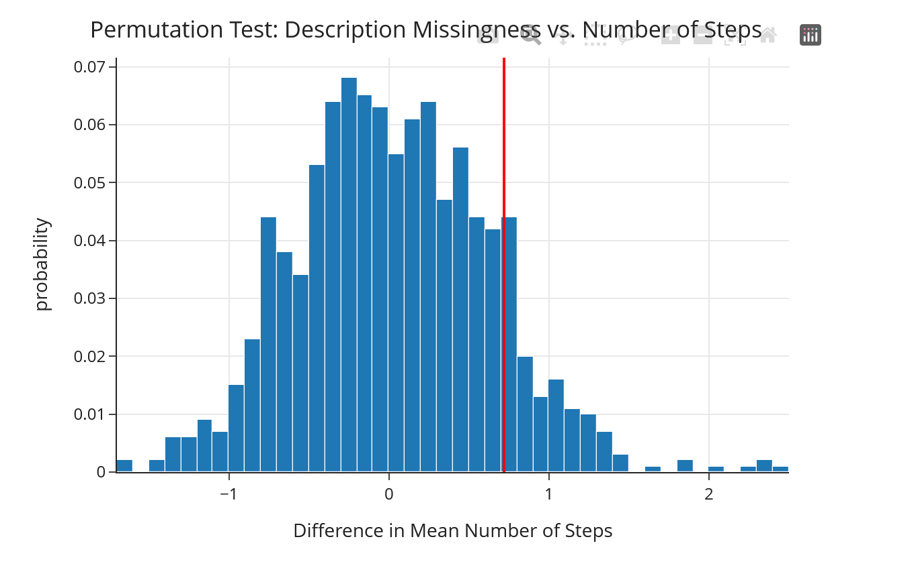
Permutation Test 2
We tested whether missingness in the description column was associated with
Number of Ingredients.
Null Hypothesis: Missingness in the description column is independent of the number of ingredients.
Alternative Hypothesis: Missingness in the description column depends on the number of ingredients.
merged["desc_missing"] = merged["description"].isna()
print(f'missing descriptions: {merged["desc_missing"].sum()}')
def create_kde_plotly(df, group_col, group1, group2, vals_col, title=""):
fig = ff.create_distplot(
hist_data=[
df.loc[df[group_col] == group1, vals_col].dropna(),
df.loc[df[group_col] == group2, vals_col].dropna()
],
group_labels=[str(group1), str(group2)],
show_rug=False,
show_hist=False,
)
return fig.update_layout(title=title)
fig = create_kde_plotly(
merged,
"desc_missing",
True,
False,
"n_ingredients",
title="Distribution of Number of Ingredients by Description Missingness"
)
fig.data[0].name = "Description Missing"
fig.data[1].name = "Description Not Missing"
fig.show()
observed_stat = (
merged.groupby("desc_missing")["n_ingredients"]
.mean()
.diff()
.iloc[-1]
)
print(f"Observed difference: {observed_stat:.4f}")
n_reps = 1000
shuffled_stats = []
for _ in range(n_reps):
shuffled = np.random.permutation(merged["desc_missing"])
diff = (
merged.assign(desc_missing=shuffled)
.groupby("desc_missing")["n_ingredients"]
.mean()
.diff()
.iloc[-1]
)
shuffled_stats.append(diff)
p_value = np.mean(np.abs(shuffled_stats) >= np.abs(observed_stat))
print(f"p-value: {p_value:.4f}")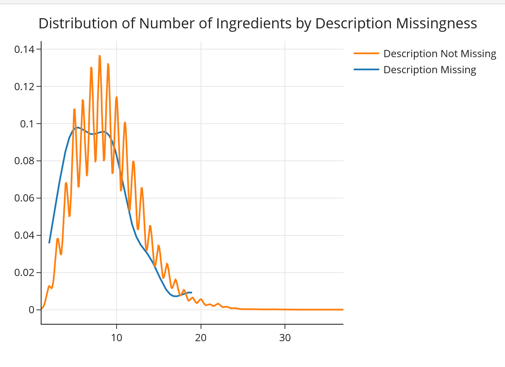
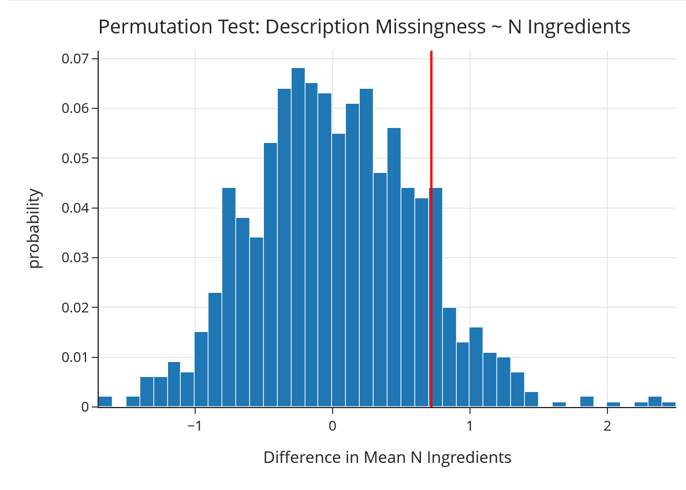
The observed difference in the mean number of ingredients between recipes with missing and non-missing descriptions was -1.1335.
The permutation test produced a p-value of approximately 0.003, which is below the significance level of 0.05.
Therefore, we reject the null hypothesis and conclude that missingness in the description column is associated with the number of ingredients.
This suggests that the missingness mechanism is more consistent with Missing At Random (MAR), since the probability of missingness appears to depend on an observed variable.
Hypothesis Test
We test whether recipes that take 30 minutes or less differ in average rating from recipes that take more than 30 minutes..
Null hypothesis (H₀):
Quick recipes and longer recipes have the same mean rating.
Alternative hypothesis (H₁):
Quick recipes and longer recipes have different mean ratings.
Test statistic:
The absolute difference in mean rating between the two groups.Test Used
We used a permutation test to assess whether there was a difference in group means between shorter and longer recipes
merged['minutes'].describe().round(0).astype(int)
rated = merged.dropna(subset=['rating']).copy()
rated['is_quick'] = rated['minutes'] <= 30
group_means = rated.groupby('is_quick')['rating'].mean()
observed_diff = abs(group_means[True] - group_means[False])
print(f'Mean rating (quick): {group_means[True]:.4f}')
print(f'Mean rating (longer): {group_means[False]:.4f}')
print(f'Observed abs difference: {observed_diff:.4f}')
n_reps = 1000
perm_diffs = []
for _ in range(n_reps):
shuffled_labels = np.random.permutation(rated['is_quick'])
means = rated.assign(is_quick=shuffled_labels).groupby('is_quick')['rating'].mean()
perm_diffs.append(abs(means[True] - means[False]))
p_value = np.mean(np.array(perm_diffs) >= observed_diff)
print(f'p-value: {p_value}')
p-value: 0.0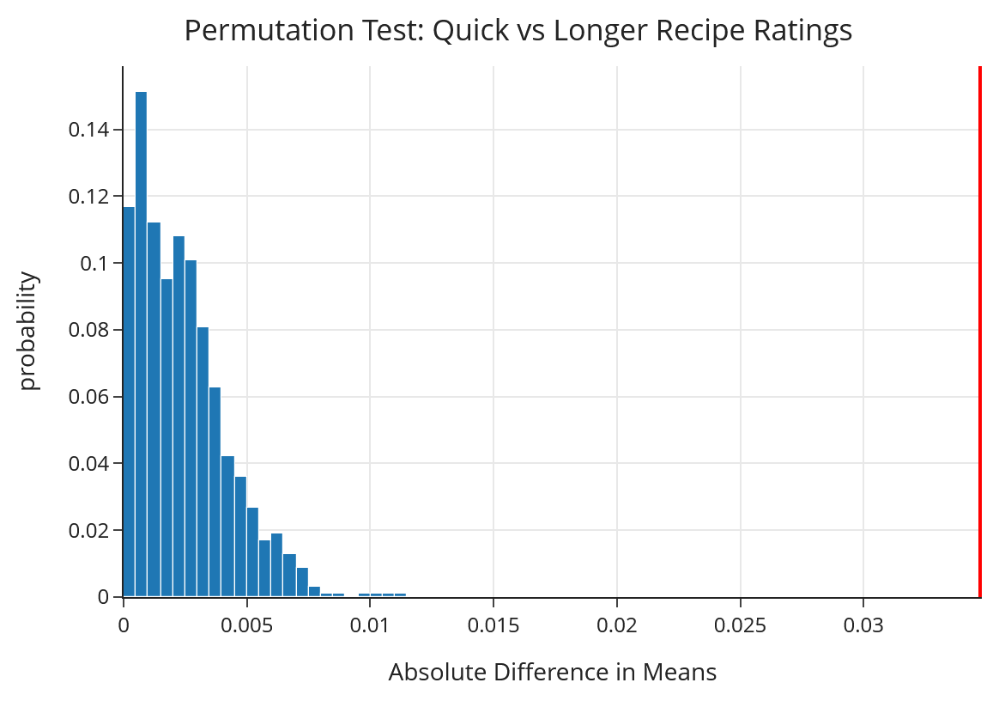
The permutation test produced a p-value less than 0.001, so we reject the null hypothesis that quick recipes and longer recipes have the same mean rating. This suggests that recipe rating is associated with whether a recipe takes 30 minutes or less. However, the observed difference in mean rating is very small: quick recipes have an average rating of **4.6985**, while longer recipes have an average rating of **4.6638**, for a difference of only about **0.0347** points. So although the result is statistically significant, the effect appears to be practically negligible.
Framing a Prediction Problem
Our prediction problem is to determine whether a recipe review will receive a five-star rating. We define the response variable as `is_five_star`, which equals 1 when rating = 5, and 0 otherwise. Because the target has two possible outcomes, this is a **binary classification** problem. We use **F1-score** as our primary evaluation metric. The classes are not perfectly balanced, so accuracy alone could be misleading. F1-score is more appropriate because it balances precision and recall and gives a better sense of how well the model identifies five-star reviews without overpredicting them. At the time of prediction, we assume that the written review text and selected recipe-level features are available, but the numerical rating is not. Under this framing, the model predicts whether a given review corresponds to a five-star rating based on the content of the review and the associated recipe characteristics.
model_df = merged.dropna(subset=['rating', 'review']).copy()
model_df['is_five_star'] = (model_df['rating'] == 5).astype(int)
print(model_df['is_five_star'].value_counts(normalize=True).round(3))
print(f'\nrows: {model_df.shape[0]}')
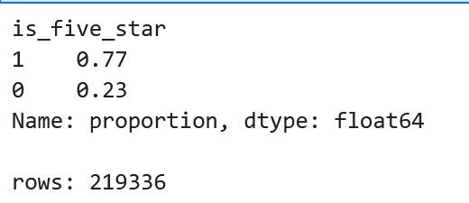
# FEATURE ENGINEERING
# exclamation marks: enthusiastic reviewers use lots of !'s
model_df['exclamation_count'] = model_df['review'].str.count('!')
# word count: how many words in the review
model_df['word_count'] = model_df['review'].str.split().str.len()
# is_modifier: did the reviewer mention changing the recipe? (from our EDA)
model_df['is_modifier'] = model_df['review'].apply(has_modification).astype(int)
# steps per ingredient: ratio to show complexy of a recipe
# 10 steps with 3 ingredients is very different from 10 steps with 20
model_df['steps_per_ingredient'] = model_df['n_steps'] / model_df['n_ingredients'].replace(0, 1)
# simple sentiment score using the words we found above
# count positive words minus negative words
positive_words = ['loved', 'great', 'amazing', 'delicious', 'perfect',
'excellent', 'wonderful', 'best', 'favorite', 'fantastic', 'awesome']
negative_words = ['bland', 'terrible', 'awful', 'bad', 'disappointed',
'dry', 'gross', 'worst', 'tasteless', 'horrible', 'disgusting']
def count_words(text, word_list):
if not isinstance(text, str): return 0
text_lower = text.lower()
return sum(text_lower.count(w) for w in word_list)
model_df['sentiment'] = (
model_df['review'].apply(lambda x: count_words(x, positive_words))
- model_df['review'].apply(lambda x: count_words(x, negative_words))
)
model_df[['exclamation_count', 'word_count', 'is_modifier', 'steps_per_ingredient', 'sentiment']].describe()
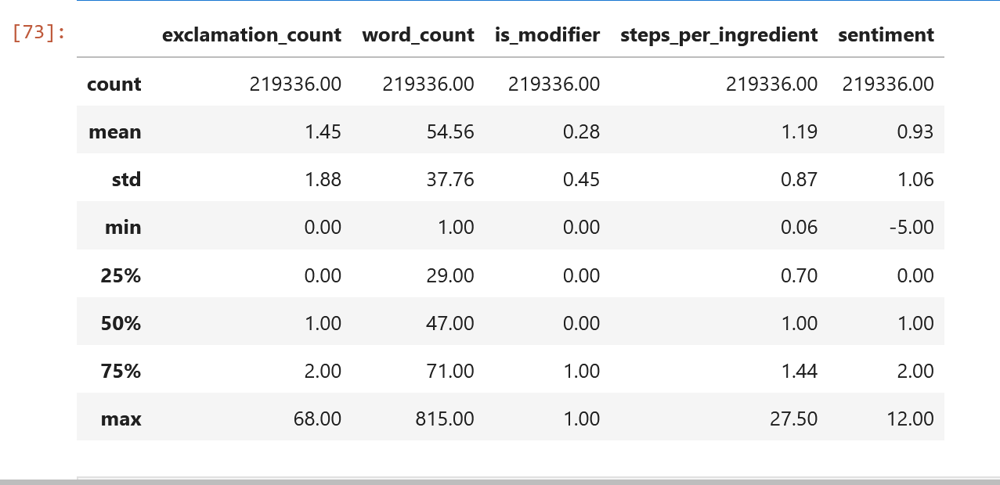
Base Machine Learning Model
In this section, we construct a baseline model for our prediction task: determining whether a recipe review receives a five-star rating. This baseline serves as a simple reference point that uses a small set of features within a single sklearn pipeline. Its performance will help us judge whether later feature engineering and model tuning meaningfully improve prediction quality.
Target Variable
The response variable for our classification task is the is_five_star column that was created as part of the EDA process.
Features Used
In the baseline model, we used structured numeric recipe-related features that were available after cleaning the dataset. These included variables such as review_length, calories, Number of Steps, Number of Ingredients and Total Minutes. We selected these features because they are interpretable and provide a simple foundation for prediction.
feature_cols = [
"review_length",
"calories",
"Number of Steps",
"Number of Ingredients",
"Total Minutes"
]
Baseline Category
We will use the column meal_type as a feature in the model, which will be one hot encoded to account for all six different meal types.
baseline_cat = ["meal_type"]
Model Choice
We used a logistic regression classifier as our baseline model because it is efficient, interpretable, and well-suited for binary classification tasks. Logistic regression also provides a strong benchmark for evaluating whether more complex models meaningfully improve predictive performance.
Pipeline
Our baseline pipeline included preprocessing steps for both numeric and categorical variables. Numeric columns were imputed and scaled, while categorical columns were one-hot encoded. This ensured that the model could handle mixed data types appropriately. The following represents the process required to
all_cols = feature_cols + baseline_cat + [
"review", "exclamation_count", "word_count", "is_modifier", "steps_per_ingredient", "sentiment"
]
X = model_df[all_cols].copy()
y = model_df['is_five_star']
X_train, X_test, y_train, y_test = train_test_split(
X, y, test_size=0.2, random_state=42, stratify=y
)
print(f'train: {X_train.shape[0]}, test: {X_test.shape[0]}')
baseline_preproc = ColumnTransformer(transformers=[
('num', StandardScaler(), feature_cols),
('cat', OneHotEncoder(drop='first', handle_unknown='ignore'), baseline_cat),
])
baseline_pl = make_pipeline(baseline_preproc, LogisticRegression(max_iter=1000, class_weight='balanced'))
baseline_pl.fit(X_train, y_train)
baseline_pred = baseline_pl.predict(X_test)
Evaluation
The baseline Logistic Regression model achieves an F1-score of 0.6630 on the test set. This gives us a useful starting benchmark for the prediction task. While the baseline performs reasonably well at identifying five-star reviews, its overall performance leaves room for improvement through additional feature engineering and model tuning in the next section.
print(classification_report(y_test, baseline_pred))
print(f'F1: {f1_score(y_test, baseline_pred):.4f}')
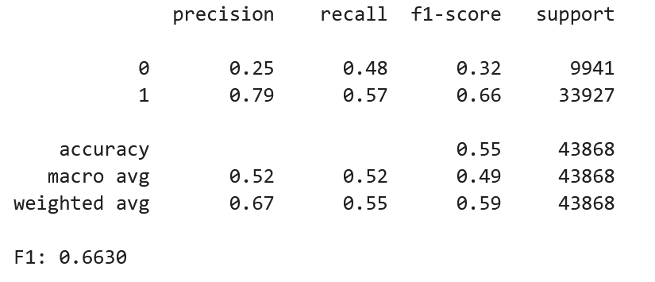
ConfusionMatrixDisplay.from_estimator(baseline_pl, X_test, y_test, cmap='Blues')
plt.title('Baseline Confusion Matrix')
plt.grid(False)
plt.show()

Final Machine Learning Model
In this section, we develop our final model for predicting whether a review assigns a recipe a five-star rating.
Building on the baseline feature set, we introduce additional engineered features and TF-IDF representations of review text
to capture richer signals from both recipe structure and review language. We then compare several classification algorithms
and use GridSearchCV to tune the model that performs best on our evaluation metric.
The engineered features in the final model are designed to capture both review sentiment and recipe complexity:
exclamation_countcaptures enthusiasm or excitement in the review text.word_countmeasures how detailed the review is.sentimentreflects the overall positive or negative tone of the review.is_modifierindicates whether the reviewer appears to have changed or adapted the recipe.steps_per_ingredientprovides a rough measure of recipe complexity by comparing the number of steps to the number of ingredients.
Numeric Features
The following numeric features were included in the final model:
num_final = [
"n_steps",
"n_ingredients",
"minutes",
"calories",
"review_length",
"exclamation_count",
"word_count",
"sentiment",
"is_modifier",
"steps_per_ingredient"
]Preprocessing Pipeline
We built a preprocessing pipeline that combines standardized numeric inputs, sparse TF-IDF text features,
and one-hot encoded categorical features. Numeric variables were scaled using StandardScaler,
review text was transformed using TfidfVectorizer, and meal_type was one-hot encoded.
preproc = ColumnTransformer(transformers=[
("num", StandardScaler(), num_final),
("text", TfidfVectorizer(max_features=5000, ngram_range=(1, 2)), "review"),
("cat", OneHotEncoder(drop="first", handle_unknown="ignore"), ["meal_type"]),
])
# Separate preprocessor for Naive Bayes (requires non-negative inputs)
preproc_nb = ColumnTransformer(transformers=[
("num", MinMaxScaler(), num_final),
("text", TfidfVectorizer(max_features=5000, ngram_range=(1, 2)), "review"),
("cat", OneHotEncoder(drop="first", handle_unknown="ignore"), ["meal_type"]),
])Model Comparison
We evaluated four candidate models using 5-fold cross-validated F1-score: Logistic Regression, Random Forest, Linear SVC, and Multinomial Naive Bayes.
Model 1: Logistic Regression
lr_pl = make_pipeline(preproc, LogisticRegression(max_iter=1000))
lr_scores = cross_val_score(lr_pl, X_train, y_train, cv=5, scoring="f1", n_jobs=-1)
print(f"mean F1 = {lr_scores.mean():.4f} (std = {lr_scores.std():.4f})")Model 2: Random Forest
rf_pl = make_pipeline(
preproc,
RandomForestClassifier(n_estimators=100, max_depth=20, random_state=42)
)
rf_scores = cross_val_score(rf_pl, X_train, y_train, cv=5, scoring="f1", n_jobs=-1)
print(f"mean F1 = {rf_scores.mean():.4f} (std = {rf_scores.std():.4f})")Model 3: Linear SVC
svc_pl = make_pipeline(preproc, LinearSVC(max_iter=2000))
svc_scores = cross_val_score(svc_pl, X_train, y_train, cv=5, scoring="f1", n_jobs=-1)
print(f"mean F1 = {svc_scores.mean():.4f} (std = {svc_scores.std():.4f})")Model 4: Multinomial Naive Bayes
nb_pl = make_pipeline(preproc_nb, MultinomialNB())
nb_scores = cross_val_score(nb_pl, X_train, y_train, cv=5, scoring="f1", n_jobs=-1)
print(f"mean F1 = {nb_scores.mean():.4f} (std = {nb_scores.std():.4f})")The models ranked from best to worst by mean cross-validated F1-score were:
- Logistic Regression: 0.9115
- Linear SVC: 0.9105
- Multinomial Naive Bayes: 0.9013
- Random Forest: 0.8829
Among the four candidate models, Logistic Regression achieved the highest mean cross-validated F1-score.
Because it performed best while remaining interpretable and well-suited to sparse TF-IDF features, we selected it for further tuning with GridSearchCV.
Hyperparameter Tuning
We tuned the final Logistic Regression model by varying the following hyperparameters:
C, which controls the strength of regularization, using values 0.1, 0.5, and 1.0.max_features, which controls the size of the TF-IDF vocabulary, using values 3000 and 5000.ngram_range, which compares unigrams only against unigrams plus bigrams.
preproc_gs = ColumnTransformer(transformers=[
("num", StandardScaler(), num_final),
("text", TfidfVectorizer(max_features=5000), "review"),
("cat", OneHotEncoder(drop="first", handle_unknown="ignore"), ["meal_type"]),
])
final_pl = make_pipeline(preproc_gs, LogisticRegression(max_iter=1000))
params = {
"columntransformer__text__max_features": [3000, 5000],
"columntransformer__text__ngram_range": [(1, 1), (1, 2)],
"logisticregression__C": [0.1, 0.5, 1.0],
}
gs = GridSearchCV(final_pl, param_grid=params, cv=5, scoring="f1", n_jobs=-1)
gs.fit(X_train, y_train)
print("Best params:", gs.best_params_)
print(f"Best CV F1: {gs.best_score_:.4f}")
final_pred = gs.predict(X_test)
print(classification_report(y_test, final_pred))
print(f"F1: {f1_score(y_test, final_pred):.4f}")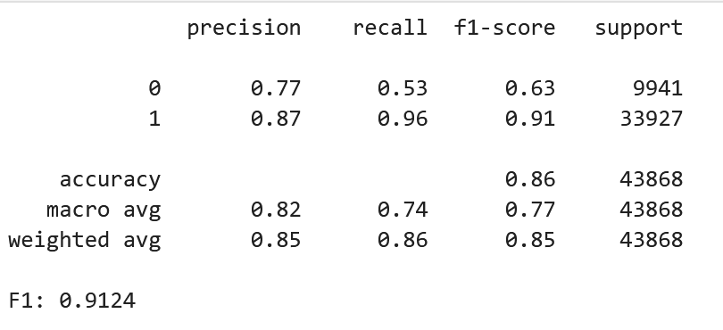
ConfusionMatrixDisplay.from_estimator(gs, X_test, y_test, cmap="Blues")
plt.title("Final Model Confusion Matrix")
plt.grid(False)
plt.show()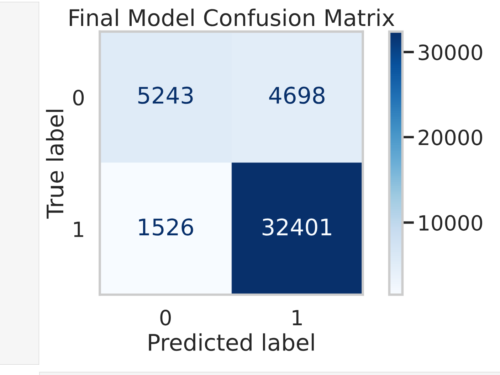
Performance Improvement Over Baseline
Finally, we compared the optimized model against the baseline model using both F1-score and accuracy.
print(f"Baseline F1: {f1_score(y_test, baseline_pred):.4f}")
print(f"Final F1: {f1_score(y_test, final_pred):.4f}")
print(f"Baseline Acc: {accuracy_score(y_test, baseline_pred):.4f}")
print(f"Final Acc: {accuracy_score(y_test, final_pred):.4f}")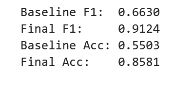
The optimized model outperformed the baseline model on both F1-score and accuracy, showing that the engineered features, text representations, and tuning process meaningfully improved predictive performance.
Fairness Evaluation
Fairness Evaluation
Performing Fairness Analysis
In this section, we evaluate whether our final model performs differently across groups defined by recipe complexity. Specifically, we compare model precision for recipes with fewer ingredients versus recipes with more ingredients, and then use a permutation test to determine whether the observed difference in precision is statistically significant.
Fairness Test Setup
To assess fairness, we split recipes into two groups based on the median number of ingredients:
- Simple recipes:
n_ingredientsless than or equal to the median - Complex recipes:
n_ingredientsgreater than the median
We used precision as the fairness metric.
Null Hypothesis (H₀): Model precision is the same for both groups.
Alternative Hypothesis (H₁): Model precision differs between the two groups.
Significance Level: α = 0.05
Computing the Observed Difference
med_ingredients = X_test["n_ingredients"].median()
is_complex = (X_test["n_ingredients"] > med_ingredients).values
# Compute precision for each group
prec_simple = precision_score(y_test[~is_complex], final_pred[~is_complex])
prec_complex = precision_score(y_test[is_complex], final_pred[is_complex])
observed_diff = abs(prec_simple - prec_complex)
print(f"Precision (simple): {prec_simple:.4f}")
print(f"Precision (complex): {prec_complex:.4f}")
print(f"Observed difference: {observed_diff:.4f}")
Precision (simple): 0.8746
Precision (complex): 0.8716
Observed difference: 0.0030
Permutation Test
We then performed a permutation test by repeatedly shuffling the group labels and recomputing the difference in precision. This simulates the null hypothesis that model precision does not depend on recipe complexity.
n_reps = 1000
perm_diffs = []
for _ in range(n_reps):
shuffled = np.random.permutation(is_complex)
p_s = precision_score(y_test[~shuffled], final_pred[~shuffled])
p_c = precision_score(y_test[shuffled], final_pred[shuffled])
perm_diffs.append(abs(p_s - p_c))
p_value = np.mean(np.array(perm_diffs) >= observed_diff)
print(f"p-value: {p_value:.3f}")p-value: 0.405
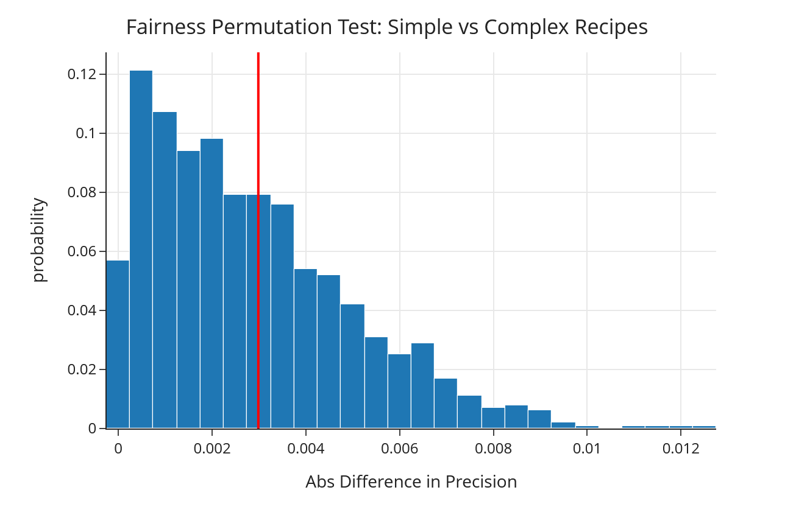
Results
The fairness analysis produced a p-value of 0.405, which is greater than the significance level of 0.05. Therefore, we fail to reject the null hypothesis that the model has the same precision across the two ingredient-count groups.
This suggests that there is not strong evidence of a meaningful difference in model precision between simpler recipes and more complex recipes. In other words, the model’s performance appears reasonably consistent across these two groups.
Conclusion
Overall, this project shows that recipe metadata and review text can be used to predict whether a user will leave a five-star review. After cleaning and exploring the Foods.com recipes and interactions data, we found that review text, recipe structure, and engineered features such as sentiment, exclamation count, word count, and steps per ingredient provided useful information for distinguishing five-star reviews from lower-rated reviews.
Our baseline Logistic Regression model provided a useful starting point, achieving an F1-score of 0.6630. After expanding the feature set, incorporating TF-IDF representations of review text, comparing multiple classifiers, and tuning hyperparameters with GridSearchCV, our final Logistic Regression model performed substantially better, achieving a cross-validated F1-score above 0.91 and improving over the baseline on both F1-score and accuracy. This suggests that combining structured recipe features with text-based review features leads to much stronger predictive performance.
In addition to modeling, our statistical analysis provided useful context for understanding the data.
We found that missingness in the description column was associated with the number of ingredients but not clearly with the number of steps,
suggesting that some missingness in the dataset is more consistent with MAR than MCAR. We also found that quick recipes and longer recipes differ
slightly in average rating, although the observed difference was very small in practical terms.
Finally, our fairness analysis showed no strong evidence that the final model performs differently across simpler and more complex recipes when evaluated by precision. The observed precision gap between the two ingredient-count groups was small, and the permutation test produced a p-value of 0.405, so we failed to reject the null hypothesis of equal precision. This suggests that the model’s predictive performance is reasonably consistent across these two groups.
Taken together, these results show that machine learning can be used to meaningfully predict five-star recipe reviews, especially when review text and engineered features are incorporated into the modeling pipeline. More broadly, this project highlights the value of combining data cleaning, exploratory analysis, missingness assessment, statistical testing, predictive modeling, and fairness evaluation to build a more complete and trustworthy data science workflow.